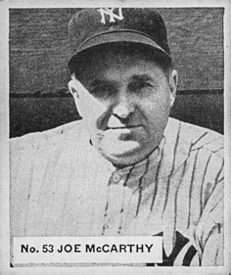

On December 26, 1919, the Yankees made an agreement with the Red Sox to purchase outfielder Babe Ruth for $25,000 cash and $75,000 in promissory notes. The deal, which was announced on January 5, 1920, was called "the most famous transaction in sports" by author Glenn Stout. After tying for the MLB home run lead in 1918 with the Athletics' Tilly Walker (with 11), Ruth broke the single-season record with 29 in 1919. At the same time, he sought a new contract that would double his $10,000 yearly salary. After the trade, Boston did not win another World Series championship until 2004; an alleged jinx against the Red Sox, which was known as the Curse of the Bambino (after a nickname for Ruth), was first brought up when they lost the 1986 World Series and became widely discussed after Dan Shaughnessy authored a book with the title. The deal became a symbol of "how things [would] always go wrong for the Red Sox and right for the Yankees", according to Stout.
With Ruth in the lineup, the Yankees' fortunes were transformed. Playing on four World Series champion teams, Ruth hit 659 home runs and scored 1,959 runs; both marks are team records as of 2018. He is second in club history with 1,978 runs batted in and accumulated 2,518 hits as a Yankee, third on the team's all-time list. As well as prowess on the field, Ruth had a larger-than-life personality, bringing him and his team a huge amount of press and public attention. The addition of Ruth helped the Yankees increase their attendance to 1,289,422 for the 1920 season; it was the first time that any MLB team drew more than one million fans in a year. His skills and charm appealed to large segments of the New York City population; Stout wrote that "He belonged to everyone." New York was the AL attendance leader for 13 of Ruth's 15 seasons with the team; the Yankees became solidly profitable as well, making over $370,000 in 1920 and remaining in the black for the rest of the decade.
The 1921 season began a 44-year period in which the Yankees were, according to author Richard Worth, "The greatest sustained winning 'empire' in sports". Ruth surpassed his own record by hitting 59 home runs. He also led MLB in on-base percentage with a .512 mark for the season. The Yankees won the AL pennant for the first time, winning 98 games in the regular season; the total gave them the league championship by a margin of 4 1⁄2 games over Cleveland. In the best-of-nine 1921 World Series, they faced the Giants and won the first two games, but their opponents claimed the Series title when they won five of the next six games. Ruth suffered an arm infection, which limited his playing time in the later part of the Series. He and Bob Meusel participated in exhibition games during the offseason, in violation of MLB rules forbidding players on pennant-winning teams from barnstorming after the World Series. Season-long suspensions were considered a possibility, but Landis decided to suspend the pair for six weeks. Despite the setback, New York had 94 wins and repeated as AL champions. The St. Louis Browns were the closest pursuers, finishing one game behind New York. In the World Series, the Yankees again faced the Giants in an all-New York matchup; the Series changed to a best-of-seven format that year. The Giants defeated the Yankees in five games, including one that ended in a tie when it was suspended because of darkness.
By 1923, the teams no longer shared the Polo Grounds, as Giants owner Charles Stoneham had attempted to evict the Yankees in 1920. Although the attempt was unsuccessful, and Stoneham and the Yankees' owners agreed to a two-year lease renewal, the Giants decided against giving the Yankees an extension after 1922. The treatment pushed the Yankees into seeking their own stadium. In 1921, the team bought a plot of land in the Bronx, and the construction crew finished the new ballpark before the 1923 season. Yankee Stadium, a triple-deck facility, was originally designed to hold more than 55,000 spectators; it was later able to hold over 70,000. Writer Peter Carino called the stadium "a larger and more impressive facility than anything yet built to house a baseball team." At Yankee Stadium's inaugural game on April 18, 1923, Ruth hit the first home run in the stadium, which sportswriter Fred Lieb named "the House That Ruth Built" as the Yankees would not have needed such a large stadium without the Ruth-driven attendance. Ruth himself had a resurgence after receiving vocal criticism for his 1922 World Series performance. He shared the MLB lead with Cy Williams by hitting 41 home runs in the 1923 season, and had a career-best .393 batting average; his performance earned him the AL Most Valuable Player (MVP) Award. The Yankees finished first for the third consecutive year, and faced the Giants again in the 1923 World Series. Giants outfielder Casey Stengel hit game-winning home runs in two of the first three games of the World Series, but Ruth's three home runs helped the Yankees win in six games for their first MLB title. Off the field, Ruppert purchased Huston's share of the Yankees for $1,250,000, assuming full ownership of the club.
The Yankees did not return to the World Series in either of the following two seasons. By 1925, New York had fallen to seventh place. That year marked the team's last losing season until 1965; the 39-year streak of winning seasons is an MLB record. First baseman Lou Gehrig debuted in 1925, earning a spot in the lineup he would not relinquish for almost 15 years, a then-record consecutive games played streak. The Yankees made more talent upgrades before their 1926 season, which included the signing of infielder Tony Lazzeri, who spent over a decade with the club. New York's performance on the field surpassed preseason expectations, and a 16-game winning streak in May gave the team a substantial lead. With a three-game final margin over the Indians, the Yankees won the pennant and a spot in the 1926 World Series against the St. Louis Cardinals. After the Yankees took a 3–2 series lead, the Cardinals won the final two games in Yankee Stadium to claim the Series title. Ruth hit three home runs in the fourth game, but made the final out of the Series on a failed stolen base attempt.
The Yankees' lineup in the 1927 season, which featured Ruth, Gehrig, Lazzeri, Meusel, Mark Koenig, and Earle Combs, was known as Murderers' Row for its power hitting. The team led in the standings throughout. The Yankees took first place in early May, and by the end of June had posted a 49–20 record, giving them a large lead in the AL standings; by mid-September, they had clinched the pennant. The 1927 Yankees had a 110–44 record in the regular season, and broke the AL record for wins in a year. Ruth's total of 60 home runs set a single-season home run record that stood for 34 years. Gehrig added 47 home runs and his 175 RBI topped the AL; he won the first of his two AL MVP Awards. The Yankees completed the season by sweeping the Pittsburgh Pirates in the 1927 World Series. The 1927 Yankees squad is included among the great teams in baseball history.
To begin the 1928 season, the Yankees went on a 34–8 run and took a sizable lead. The Athletics chased them for the AL pennant towards the end of the season, but New York won the title again and faced the Cardinals in the 1928 World Series, sweeping them in four games. Coming off a 54-home run regular season, Ruth had three more and a .625 batting average in the Series, while Gehrig batted .545 with four home runs. With the Yankees' run of three straight league pennants and two World Series titles came criticism from fans of other teams, who decried the team's dominance. Calls to "Break up the Yankees!" were made, and critics hoped that the team would sell Gehrig to separate him from Ruth; Ruppert declined to do so.
The Yankees' run of pennants was broken up by a rising Philadelphia Athletics team, which denied the Yankees a fourth straight AL championship in 1929. The team's manager, Huggins, died on September 25. After Art Fletcher managed for the rest of the year, Shawkey took the position for the 1930 season, in which the Yankees had a third-place finish. The Yankees fired Fletcher and hired Joe McCarthy; in his first season as manager, the team won 94 games but finished second behind the Athletics. McCarthy's team was undergoing a transition from Murderers' Row; new contributors included Bill Dickey, who had first played for the Yankees in 1928, and pitchers Red Ruffing and Lefty Gomez. Ruffing, who had a 39–96 record with the Red Sox before being traded to New York, ended up 231–124 in his Yankees career.
In 1932, McCarthy's Yankees returned to the top of the AL with 107 wins, enough for a 13-game margin over the Athletics.The Yankees met the Chicago Cubs in the 1932 World Series and swept them four games to none. Gehrig had three home runs, eight RBI, and a .529 batting average for the Series, while Ruth contributed a pair of home runs in the third game at Chicago's Wrigley Field. The second of Ruth's home runs was his "called shot"; after pointing towards the center field stands, according to some post-game press reports, Ruth homered to break a 4–4 tie in the fifth inning. Although accounts of the incident vary greatly, author Eric Enders called the home run "the most talked-about hit in baseball history".
The Yankees began cutting their payroll in 1933, as their finances were strained by the Great Depression. Regardless, the makeup of the team was minimally impacted in comparison to the Athletics, who were forced to sell key players to lower their expenses. From 1933 to 1935, the Yankees posted three consecutive second-place finishes. Ruth's performance declined from previous seasons in 1933 and 1934, his final years with the team. The Yankees released Ruth from his contract before the 1935 season, and Gehrig took a leadership role for the club; he was named New York's captain. New York was beginning to see results from an initiative to buy minor league teams in an effort to reduce the cost of obtaining players; after buying their first minor league club in 1929, the Yankees had a 15-team system by 1937. Players developed in the farm system entered the Yankee lineup beginning in the mid-1930s, and into the early 1960s this remained the team's primary player acquisition method. McCarthy worked to regulate player behavior in areas such as mental focus and off-field attire; the Yankees acquired a "corporate image" that they retained for many years.